Префектура Нара · Нара · бар
LAMP BAR: бар в Наре, где лучший бармен мира смешивает коктейли из нарского сакэ и чая
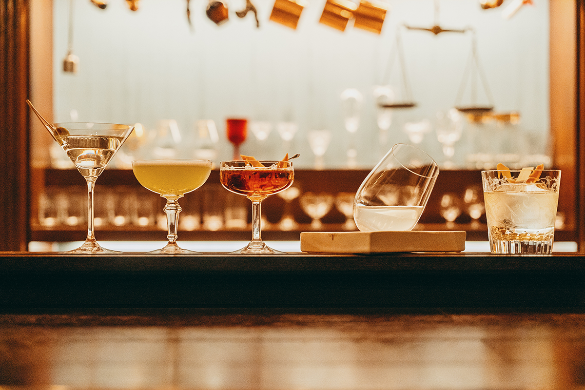
В 2015 году лучшим барменом мира стал хозяин небольшого бара из Нары. С тех пор в LAMP BAR едут со всего света, а он сам решил доказать, что древняя столица Японии может задавать тон барной культуре всей страны.
Чемпион
Бармен из Нары против 20 000 соперников
Бар хорош тем, что здесь можно не только выпить, но и попробовать незнакомый напиток, а за разговором с барменом узнать его историю. В LAMP BAR, в квартале Нарамати старого города Нары, за стойкой стоит человек, которого называют лучшим барменом мира.
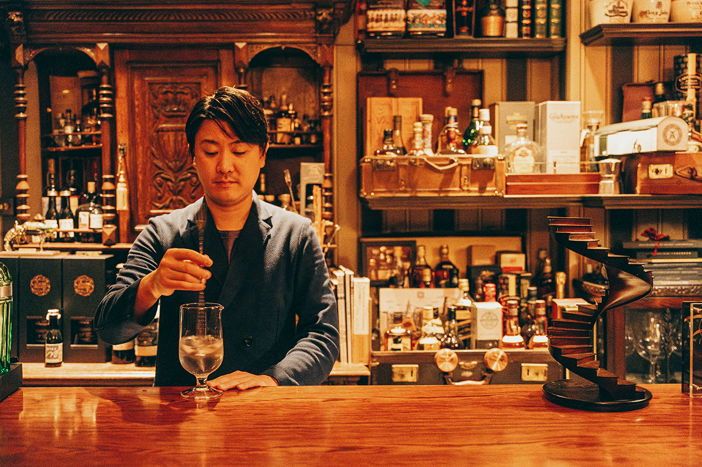
Митито Канэко открыл LAMP BAR в 2011 году. В 2015 году он победил в WORLD CLASS, крупнейшем мировом конкурсе барменов. Конкурс проводят с 2009 года под девизом «Raising the Bar»: поднять ценность барной культуры во всём мире и через бар рассказывать гостям, как прекрасны хорошие напитки. В 2015 году в нём участвовали около 20 000 барменов из 54 стран.
Подготовка пришлась на самое неудобное время. В январе бар переехал в новое помещение, работал в нём Канэко совсем один, а в феврале и апреле проходили японские отборочные туры, к которым нужно было придумать собственные коктейли.
«За границей я тогда почти не бывал и по-английски толком не говорил. Но шанс в жизни не приходит тогда, когда тебе удобно. Чтобы его поймать, надо быть готовым в любой момент. Поэтому я решил: как бы ни было тяжело, раз шанс пришёл, я его беру»
Митито Канэко
Он стал представителем Японии и поехал на мировой финал в ЮАР. Финал состоял из шести дисциплин, и Канэко выиграл общий зачёт: судьи отметили его изобретательность и подачу, где были и юмор, и сюрприз. В задании «10 разных коктейлей за 10 минут» он успел сделать 12, включая бокалы для переводчиков, и ещё поднять с ними тост. По его словам, раньше он так волновался, что дрожали руки, но со второго отборочного тура был настолько занят, что на волнение не осталось сил, и он начал свободно импровизировать.
После победы жизнь Канэко изменилась. Чемпион становится лицом конкурса и ездит по миру с лекциями: к 2020 году он побывал за границей уже 60 раз и продолжает летать до сих пор.
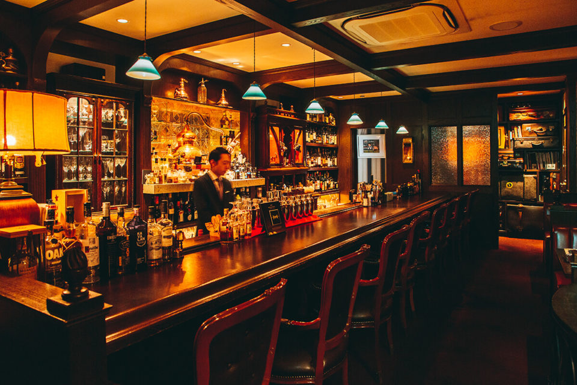
Пространство
Три комнаты «вокруг света»
В 2015 году бар переехал из помещения на 12 мест в нынешнее, на 26 мест. Новое пространство Канэко построил вокруг идеи «around the world» и разделил его на три комнаты. Главный зал рассказывает о том, как появились коктейли. В комнате путешествий главная тема это дорожный сундук, в каких когда-то развозили напитки по разным странам. Зеркальная комната посвящена истории алкоголя.
«Мне хотелось, чтобы гостей со всего мира трогали не только коктейли, но и само пространство»
Митито Канэко
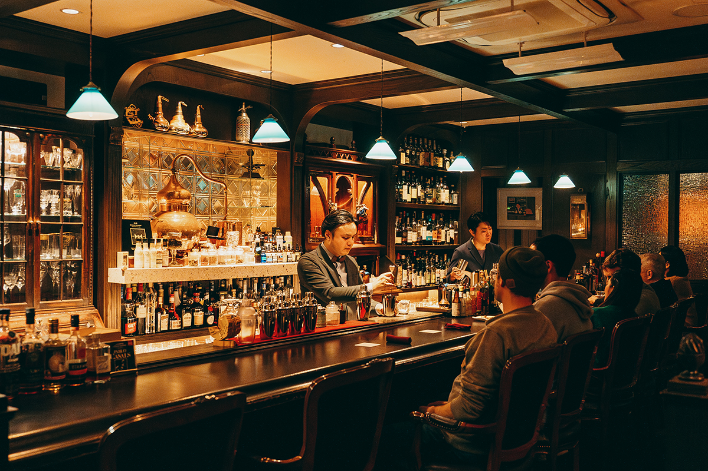
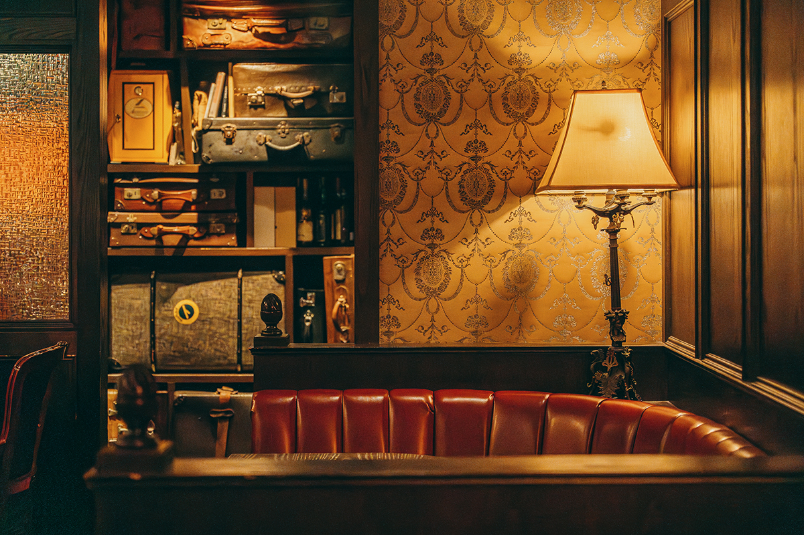
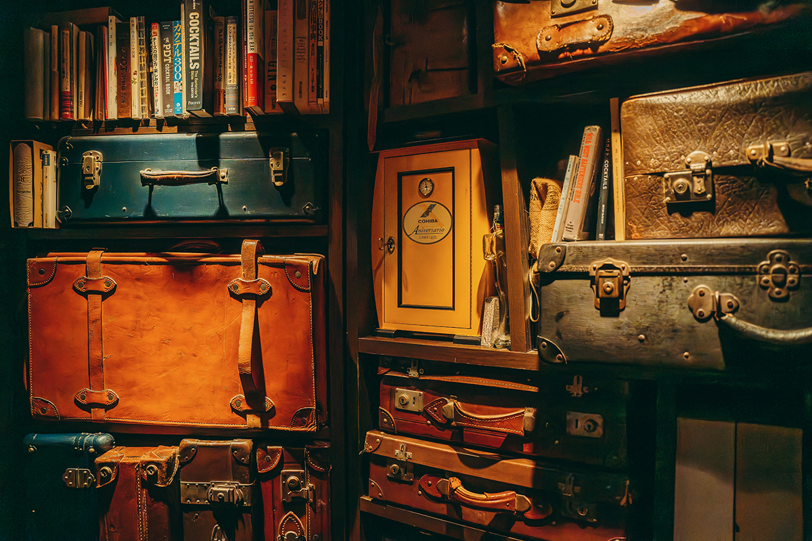
Бар занимает первый этаж небольшого здания. За место здесь берут чардж: в 2024 году он составлял 550 иен.
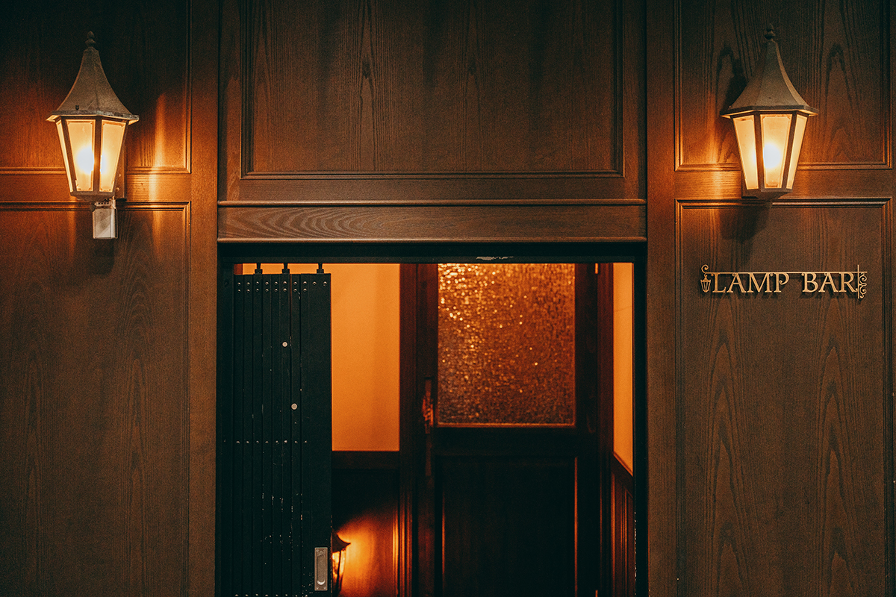
Взгляд
Бары Японии и «перевод культуры»
Поездки по миру многое показали Канэко. Бармены разных стран встречаются лично и обмениваются новостями, а японские часто не знают новых ингредиентов и техник. В 2020 году он говорил, что в рейтинг «50 лучших баров Азии» попали лишь около пяти японских баров, тогда как сингапурских там гораздо больше, и опасался, что Япония может отстать.
В то же время он заново увидел, насколько хороши японская кухня и ремесло. Чтобы иностранец это понял, нужен «перевод культуры»: объяснять одно и то же разными словами для гостей из разных стран и рассказывать историю напитка через посуду и меню.
«Возвращаясь домой, я понял, что японские продукты и способы готовки, которые казались мне обычными, на самом деле очень своеобразны. Даже наши довольно мягкие приправы собраны из тончайших сочетаний, как будто нитку продевают в иголку. Теперь я помню об этом в работе»
Митито Канэко
В 2024 году он хотел не столько действовать ради себя, сколько делиться опытом, и принимал стажёров из Японии и других стран. В ноябре 2023 года Канэко впервые курировал бар за границей: он руководил обновлением бара EAST END в отеле HOTEL PROVERBS Taipei на Тайване.
Нару он считает сильным барным городом. По его словам, за первые десять конкурсов WORLD CLASS бармены из Нары восемь раз попадали в десятку лучших, а бары города дружат между собой.
«В Наре есть история и самая разная культура, и уровень баров здесь высокий. Хочется поднять японскую барную культуру именно отсюда»
Митито Канэко
Своё
Вермут из сакэ
Нару называют родиной японского сакэ, и Канэко решил на этом сыграть. Мечта сделать лучший мартини привела его к собственному вермуту. Вместе с винокурней из города Нара он в 2021 году запустил марку Japanese Sensorium и начал продавать вермут на основе сакэ «Иссуй Химуро».
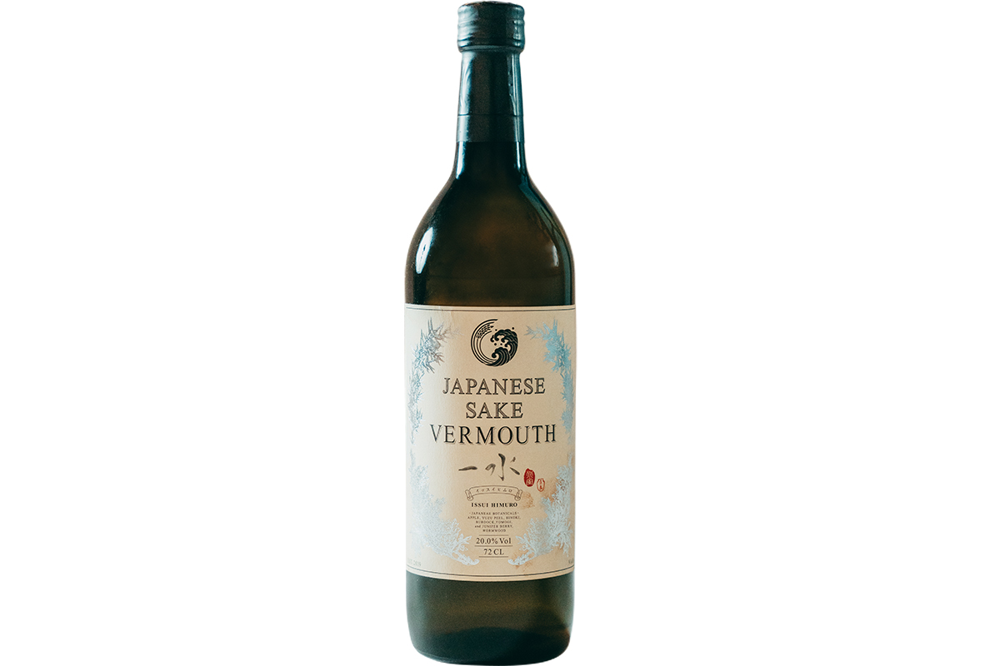
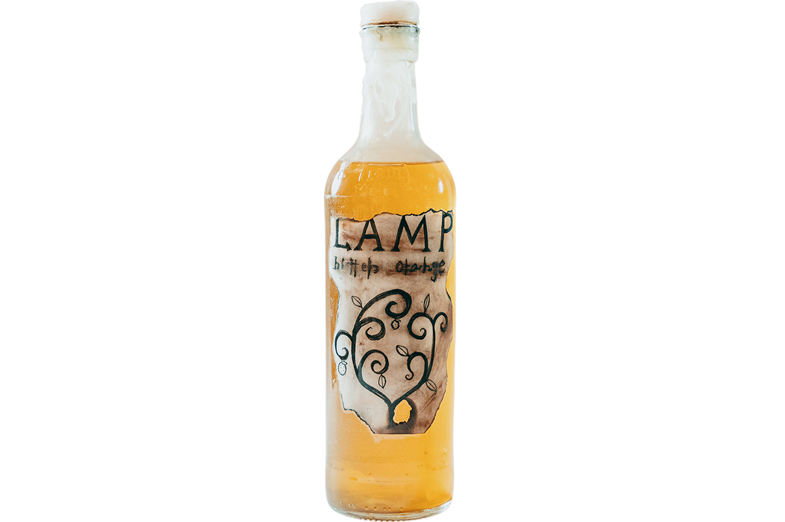
Меню
Коктейли, рождённые в Наре
В 2024 году каждый из коктейлей ниже стоил 1650 иен, а цены в меню начинались от 1320 иен. Меню меняется по сезону, и набор напитков бывает другим.
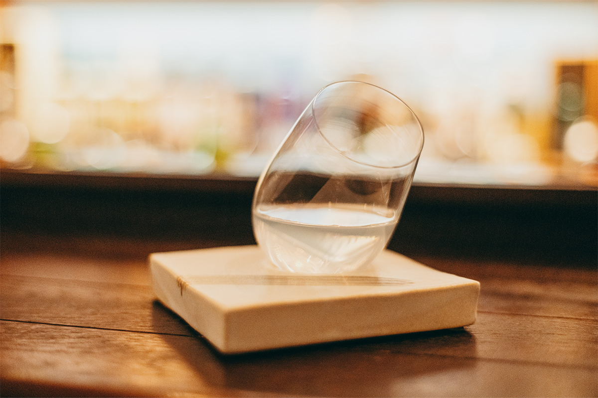
Colorless придумал сам Канэко. В 2020 году его подавали на подставке из переработанной нарской древесины, в 2024 году на керамической.
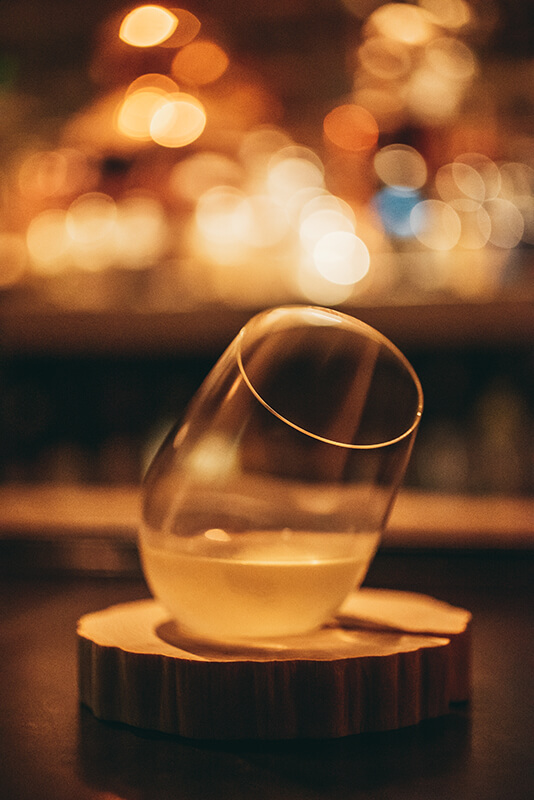
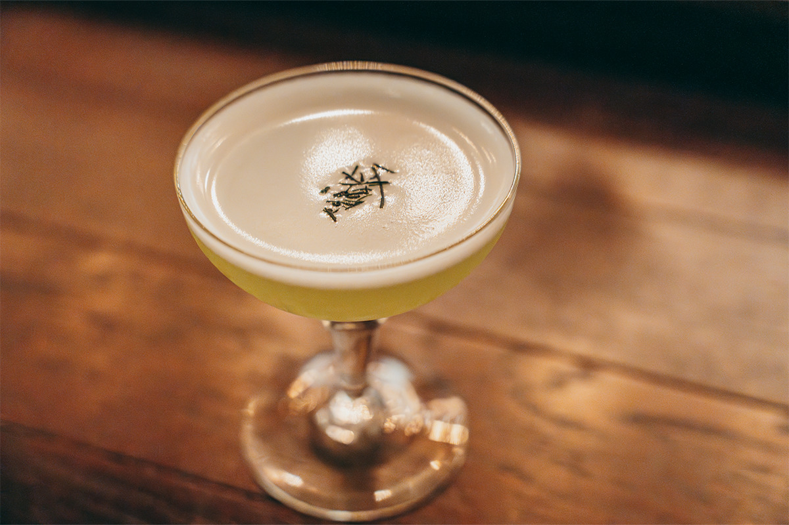
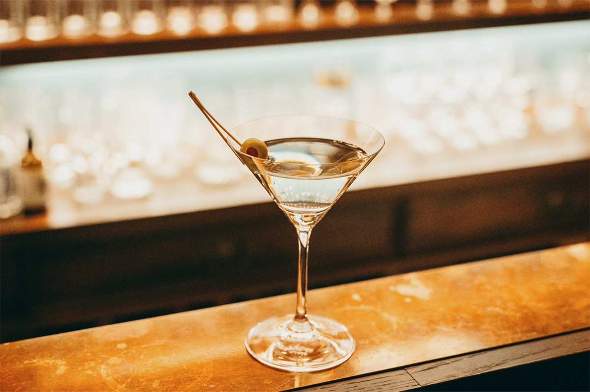
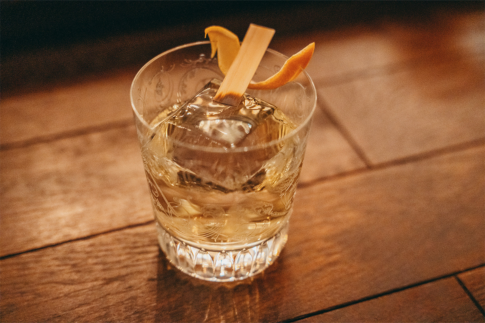
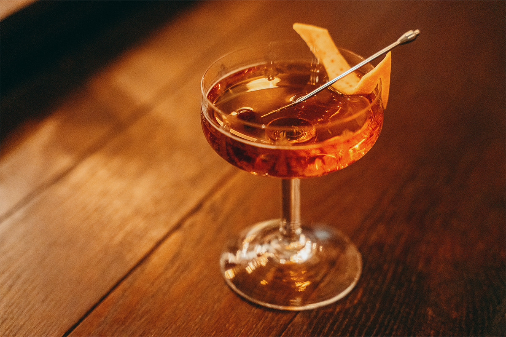
LAMP BAR
- Адрес
- префектура Нара, Нара, Цунофури-тё, 26, здание Исэя, 1-й этаж
- Телефон
- +81 742-24-2200
- Часы работы
- 17:00–2:00, в праздники до 24:00
- Выходные
- нерегулярно
- Цены / Вход
- чардж 550 иен, коктейли от 1320 иен
- Сайт
- lamp-bar.com
Фото: Юта Того, Митито Канэко.